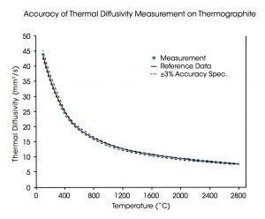

The Discovery Laser Flash DLF 1600 is an advanced freestanding instrument for the measurement of thermal diffusivity and specific heat capacity of materials from room temperature to 1600°C. The distinctive design incorporates a proprietary laser, laser optics, detector, and furnace technologies, and along with the unique patented high purity alumina five-position sample carousel, ensures unprecedented measurement accuracy and sample throughput. With the ability to be operated in a variety of atmospheric conditions, including air, inert gas, or under vacuum, the DLF 1600 can characterize a wide variety of materials including polymers, ceramics, carbons, graphite, composites, glasses, metals, and alloys.
Unmatched Accuracy and Repeteability of DLF High Temperature Systems Accuracy, which defines how close a set of measured data are to the true value, is paramount in understanding how well an instrument performs under known conditions. The figure to the top right shows results of a graphite sample tested to 2800°C compared to the reference value. The data show the accuracy is better than ±3% across the entire temperature range.
The repeatability, or precision, of a measurement system is determined by the variation of multiple measurements on the same instrument under the same conditions. The bottom figure to the right shows measurement repeatability on five molybdenum samples tested from room temperarure to 1600°C at intervals of 100°C. The deviation from the average is less than ±1% with almost 80% of the results within ±0.5% of the average. These results are well within the specification of ±2%, across the entire temperature range demonstrating the unmatched repeatability of the DLF high temperature systems.
